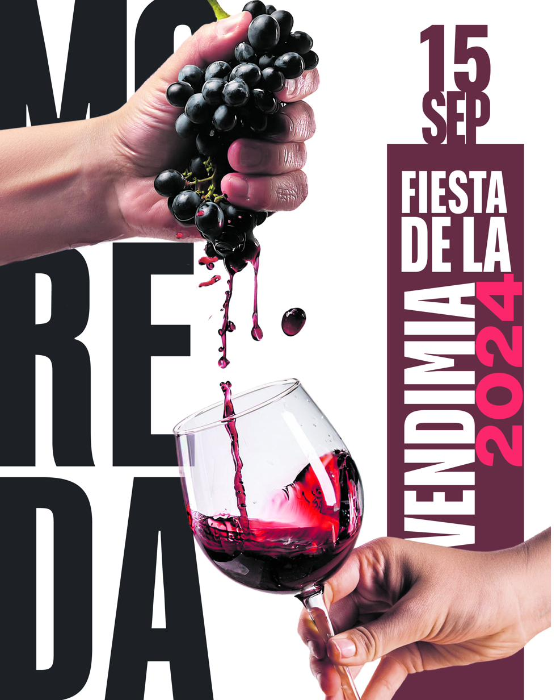

Diseño publicitario en prensa: anuncios, portadas y eventos desde dentro de un periódico
Trabajar en el departamento de publicidad de un diario tiene sus propias reglas: el soporte manda, los plazos aprietan y cada pieza convive con el contenido editorial del día.
Leer artículo